有些突然，在本章开始的部分，准备复习一下程序执行时内存空间的状态。 本章会涉及到计算机底层的部分，如果不事先储备一些知识的话，恐怕会无法应对。 这些知识在随后的章节中迟早也会用到。在这里弄懂了，后面就轻松了。
一般C程序在内存空间中会有如下几个部分。
文本段是代码存放的地方。第二点一看便知。函数参数和局部变量压在机器栈中。
堆由malloc负责分配。
再稍微说一下第三点。因为是机器“栈”，自然使用的是栈的数据结构。
也就是说，可以不断在上面堆加新东西。实际上，栈中的值是以int这样细小的单位堆放的，
不过，可以看到，还有一个逻辑上更大的单位。称之为堆帧（stack frame）。
栈帧对应着一次函数调用。也就是说，每次函数调用都会推进去一个栈帧。 函数返回时，弹出一个栈帧。尽可能简化一下，机器栈的情况就如图1所示。
图1: 机器栈
图中，栈的上面写了“上”，但是， 机器栈未必是从低地址向高地址延伸。 比如，x86的机器栈就是向低地址延伸。
alloca()使用malloc()可以在堆上分配任意大小的内存区域。alloca()是它的机器栈版。
不同于malloc()，用alloca()分配的内存无需释放。
也许说函数return时，释放就“完成”了更好一些。
因此，分配的值是不能当作函数返回值的。“不能返回指向局部变量的指针”也是一样的。
到这里就好了。可以在局部分配运行时可改变长度的数组，理解到这种程度就可以了。
但是世上还存在没有native版本的alloca()的环境。即便如此，还有很多人想用alloca()，
所以，可以用C写一个完成同样功能的函数。在这种情况下，只要实现“无需释放”这一特征，
无需在机器栈中分配。通常不会这么做。如果可能，都会先实现native版本的alloca()。
alloca()用C怎样实现呢？最简单的实现是，先使用malloc()分配内存。
让alloca()将调用函数和分配的地址作为一组记录到一个全局列表中。
下一次调用alloca()的时候，检查这个列表，
那些分配给已经结束的函数的内存使用free()释放就可以了（图2）。
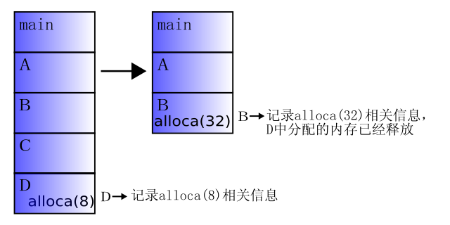
图2: C实现alloca的动作
ruby的missing/alloca.c是一个模拟版alloca()实现的例子。
从这里开始就进入本章的主题，一个关于垃圾回收的话题。
对象通常存在于内存之中。如果生成了大量的对象，势必要占用大量的内存。
如果有无限的内存可以使用当然没什么问题，但现实中，内存容量必然是有限的。
因此，用过的内存必须回收再利用。具体点说，
通过malloc()得到的内存必须用free()归还。
不过，把malloc()与free()全部交给程序员管理会很麻烦。特别是在面向对象程序中，
对象之间相互引用，很难知道哪个对象的内存应该释放。
这时候就轮到垃圾回收登场了。所谓垃圾回收（garbage collection，以下简称GC），
是“自动检测和释放不再需要的内存”的功能。有了GC，就不必再为“何时free()内存”而烦恼了。
是否使用它会让程序编写的难易程度有很大差异。
顺便说一下，过去有一些书，在其中可以看到，“整理可用内存碎片就是GC”。
这是“压缩（compaction）”的工作。压缩会让内存变得紧凑。
压缩完成后，可以轻松提高内存缓存的命中率，起到加速的效果，然而，这不是GC的主要目的。
GC的目的在于内存回收。实际上，许多GC在内存回收时并不做压缩。ruby的GC也不做压缩。
那么，具体有什么样的GC系统可以使用呢？Boehm GC
可以作为C或C++的add-on使用。此外，在Java和Perl、Python、C#、Eiffel等最近的语言中，
GC已经成为的标准配置。本章就来详细讨论ruby的GC。目标文件是gc.c。
讨论GC算法之前，需要解释一下“GC是什么”。也就是说，“无用的内存”处于一种怎样的状态。
为了让讨论更加具体，将对象间的链接结构简化。也就是图3所示的状态。
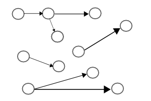
图3: 对象
首先，全局变量所指的而且在语言堆栈上的对象“确实必要”。 对象实例变量所指的对象也是必要的。从这些对象出发，顺着链接前进可以到达的对象，都是必要的。
稍微理论点说，以“确实必要”的对象为起点，递归的沿链接前进可以到达的所有对象都是必要的。 图4表现了这种情况。线左侧是“确实必要”的对象，从那开始能够到达的都涂成了黑色。 涂黑的对象都是必要的。其余的可以释放。
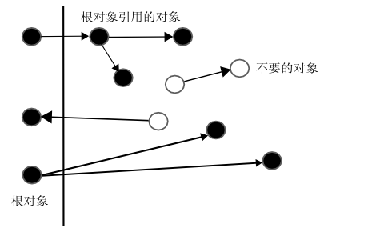
图4: 必要的对象和不必要的对象
术语将“确实必要的对象”称为“GC的根”。追踪必要对象的结果可以视为一个树型结构，而它就是树的根（root）。
GC最初由Lisp实现，Lisp最初的GC实现就是世界上最早的GC，称为标记与清除（mark & sweep）型GC。
ruby的GC也是这一种。
标记与清除型GC的印象接近于“必要对象”的定义。 首先给根对象加上“记号”。以此为出发点，给找到的对象都加上“标记”。 这个全过程就是“标记”阶段。
所以，除此之外，其它的对象都是无法找到的，检查全部的对象集合，释放掉那些没有“标记”的对象（清除）。 这就是扫雷（minesweeper）中的sweep（清除）。
这种方法有两个优点。
缺点也是两个。
使用Emacs编辑器的时候，时常会出现“Garbage collecting...”，完全失去响应，这时就是在进行GC。
这就是第二个缺点一个直接的例子。不过，这点可以通过改变算法（增量GC）进行改进。
停止与复制型GC是标记与清除型GC的一个变体。首先，准备多个对象域。 为了简化讨论，假设只有两个域：A和B。将一边标记为“active”，生成的对象都放到active域中（图5）。
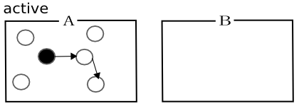
图5: 停止与复制（1）
执行GC时，按照标记与清除同样的路径进行搜索。但是，与标记不同的是，对象本身移到了另外一个空间（图6）。 搜索全部链接之后，只要抛弃留在A中的对象，将B标记为active即可。
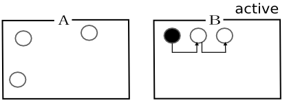
图6: 停止与复制（2）
停止与复制也有两个优点。
缺点也是两个。
可见天下没有免费的午餐。
引用计数不同于之前介绍的东西，它的检查分布在代码各处。
首先，为每个对象加上一个整数计数器。当变量或数组引用时，对象的计数器就会增加。 停止引用时，计数器就会随之减少。计数器为0时，就会释放。 这便是引用计数的方法（图7）。
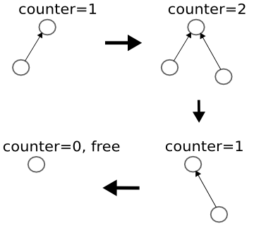
图7: 引用计数
这种方法有两个优点。
缺点也是两个。
这里解释一下第二点。环（cycle）指得是图8所示的有循环引用关系的状态。 变成这样的话，计数器便不会减少，也就绝对无法释放。
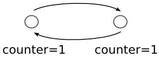
图8: 环
顺便说一下，最新的Python（2.2）采用了引用计数，其中的环可以释放。 但这并不是引用计数本身的力量，不过是时常采用标记与清除型GC检查罢了。
ruby GC的目标只是Ruby的对象。而且一定要是ruby生成和管理的对象。
反过来说，它无法照料到用户随意分配的内存。
比如，下面的函数在ruby的操作中就会引起内存泄漏。
void not_ok()
{
malloc(1024); /* 获得内存后丢弃 */
}
然而下面的函数不会引起内存泄漏。
void this_is_ok()
{
rb_ary_new(); /* 生成Ruby数组后丢弃 */
}
rb_ary_new()使用了ruby的正式接口分配内存，所以会在ruby GC的管理之下，
由ruby照料。
struct RVALUE对象的实体是结构体，对象的管理就是对这个结构体的管理。
当然，非指针的Fixnum Symbol nil true false例外，太麻烦，这里就不一一写了。
实体结构体的大小因类型而不同，恐怕是为了避免管理上的麻烦， 内建类的结构体声明为共用体，并通过共用体访问内存。共用体声明如下。
▼RVALUE
211 typedef struct RVALUE {
212 union {
213 struct {
214 unsigned long flags; /* 不用时为0 */
215 struct RVALUE *next;
216 } free;
217 struct RBasic basic;
218 struct RObject object;
219 struct RClass klass;
220 struct RFloat flonum;
221 struct RString string;
222 struct RArray array;
223 struct RRegexp regexp;
224 struct RHash hash;
225 struct RData data;
226 struct RStruct rstruct;
227 struct RBignum bignum;
228 struct RFile file;
229 struct RNode node;
230 struct RMatch match;
231 struct RVarmap varmap;
232 struct SCOPE scope;
233 } as;
234 } RVALUE;
(gc.c)
struct RVALUE是一个只有一个元素的结构体。
不直接使用union是为了调试或将来扩展时添加成员的方便。
首先来关注一下共用体的第一个元素free.flags。注释中写着“不用时为0”，这是真的吗？
难道使用中的对象free.flags不能偶然为0吗？
正如在第2章《对象》中看到的那样，所有的对象构造体其第一个元素都是struct RBasic。
因此，无论从共用体的哪个元素访问，写成obj->as.free.flags和写成obj->as.basic.flags都是一样的。
对象在标志位都有一个结构体类型标志（T_STRING等），而且，所有的标志都是非0值，所以，
“活着”的对象其标志不会偶然为0。换句话说，可以确认，标志为0是“死”对象的充分必要条件。
object heap）所有对象结构的内存都在全局的变量堆上。下面这个叫做对象堆。
▼ 对象堆239 #define HEAPS_INCREMENT 10 240 static RVALUE **heaps; 241 static int heaps_length = 0; 242 static int heaps_used = 0; 243 244 #define HEAP_MIN_SLOTS 10000 245 static int *heaps_limits; 246 static int heap_slots = HEAP_MIN_SLOTS; (gc.c)
heaps是struct RVALUE数组的数组。heaps中保存的是一个个的heap，
heap的元素就是一个个的slot（图9）。
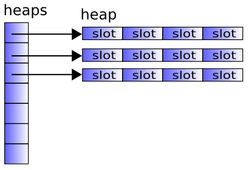
图9: heaps、heap、slot
heaps的长度heaps_length是可变的。实际用到的槽的个数保存heaps_used中。
每个heap的长度对应保存在heaps_limits[index]中。
也就是说，对象堆的结构如图10所示。
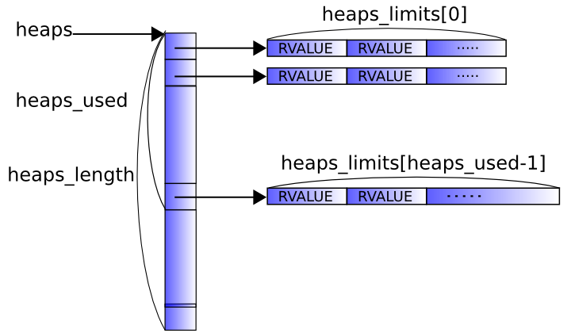
图10: 在内存上展开的heap的概念图
这个结构有其必然性。比如，当所有结构都配置到一个数组中时，内存空间最为紧凑，
但是由于地址可能发生变化，不能使用realloc()，因为VALUE就是单纯的指针。
对应于Java实现，对象是可以移动的，因为它是通过对象表来处理的，VALUE是对象的索引，而非地址。
然而，每次访问对象多要对数组进行索引，性能会有所下降。
另一方面，把RVALUE的指针（也就是VALUE）做成一个一维数组会怎么样呢？
乍看起来，一切顺利，但GC的时候会遇到问题。
正如后面会详细讨论的，因为ruby的GC需要知道一个整数是否是“像VALUE（指向RVALUE的指针）一样”。
所有的RVALUE配置到不相关的地址之后，所有RVALUE的地址要分配同所有“可能是地址”的整数进行比较。
它会让GC挂起的时间变成O(n^2)以上的数量级，这是无法容忍的。
综上所述，对象堆是在某种程度上将地址相关，且位置和总量不受限制的结构。
freelist未使用RVALUE是由一个以freelist开头的链表管理的。RVALUE的as.free.next就是为此准备的链。
freelist
236 static RVALUE *freelist = 0; (gc.c)
add_heap()了解数据结构之前，先来看看添加堆的函数add_heap()。
这个函数主线之外的描述很杂乱，除去错误处理和转型部分，可以得到一个简化版本。
add_heap()（简化版）
static void
add_heap()
{
RVALUE *p, *pend;
/* 必要的话扩展heaps */
if (heaps_used == heaps_length) {
heaps_length += HEAPS_INCREMENT;
heaps = realloc(heaps, heaps_length * sizeof(RVALUE*));
heaps_limits = realloc(heaps_limits, heaps_length * sizeof(int));
}
/* 增加一个heap */
p = heaps[heaps_used] = malloc(sizeof(RVALUE) * heap_slots);
heaps_limits[heaps_used] = heap_slots;
pend = p + heap_slots;
if (lomem == 0 || lomem > p) lomem = p;
if (himem < pend) himem = pend;
heaps_used++;
heap_slots *= 1.8;
/* 分配的RVALUE连接到freelist */
while (p < pend) {
p->as.free.flags = 0;
p->as.free.next = freelist;
freelist = p;
p++;
}
}
以下几点需要确认。
heap的长度是heap_slotsheap，heap_slots变为原来的1.8倍heaps[i]的长度（生成堆时heap_slots的值）保存在heaps_limits[i]中再有，只有这个函数修改lomem和himem，也只有从这个函数理解其机制。
这两个变量分别是对象堆的最下端地址和最上端地址。
这个值稍后还会用于判断一个整数是否是“像VALUE一样”的。
rb_newobj()综合以上几点，就能够知道对象生成的方法。
如果freelist没有相连的RVALUE，就会去做GC，或是增加堆。
通过阅读对象生成的函数rb_newobj()，我们可以确认这一点。
rb_newobj()
297 VALUE
298 rb_newobj()
299 {
300 VALUE obj;
301
302 if (!freelist) rb_gc();
303
304 obj = (VALUE)freelist;
305 freelist = freelist->as.free.next;
306 MEMZERO((void*)obj, RVALUE, 1);
307 return obj;
308 }
(gc.c)
如果freelist为0，也就是，没有剩余的结构体，就启动GC，创建一个区域。
即便一个对象都无法收回，rb_gc()还可以分配一个新的区域，这是毫无疑问的。
并且，从freelist中取出一个结构体，通过MEMZERO()用0填充它，然后返回它。
正如说过的那样，ruby的GC是标记和清除型。具体来说，标记就是设置FL_MARK标志。
搜索已用的VALUE，设置FL_MARK，全部检查过之后，再来看对象堆，释放那些没有设置FL_MARK的对象。
rb_gc_mark()rb_gc_mark()是一个递归标记对象的函数。
rb_gc_mark()
573 void
574 rb_gc_mark(ptr)
575 VALUE ptr;
576 {
577 int ret;
578 register RVALUE *obj = RANY(ptr);
579
580 if (rb_special_const_p(ptr)) return; /* special const not marked */
581 if (obj->as.basic.flags == 0) return; /* free cell */
582 if (obj->as.basic.flags & FL_MARK) return; /* already marked */
583
584 obj->as.basic.flags |= FL_MARK;
585
586 CHECK_STACK(ret);
587 if (ret) {
588 if (!mark_stack_overflow) {
589 if (mark_stack_ptr - mark_stack < MARK_STACK_MAX) {
590 *mark_stack_ptr = ptr;
591 mark_stack_ptr++;
592 }
593 else {
594 mark_stack_overflow = 1;
595 }
596 }
597 }
598 else {
599 rb_gc_mark_children(ptr);
600 }
601 }
(gc.c)
首先，RANY()定义如下。没什么特别的。
RANY()
295 #define RANY(o) ((RVALUE*)(o)) (gc.c)
首先，检查那些不是指针的东西和已经释放的对象，以及对已标记对象的递归检查。
obj->as.basic.flags |= FL_MARK;
这样obj（也就是函数的参数ptr）就被标记了。
之后，顺着从obj出来的引用进行标记。rb_gc_mark_children()就是这样。
其它的，从CHECK_STACK()开始，主要是为了写了些各种各样防止栈溢出的代码。
rb_gc_mark()使用递归调用对对象进行标记，如果出现大的对象簇，机器栈的长度可能就会不足。
在栈要溢出的时候，停止递归，将对象都放到全局列表中，再重新开始标记。
因为这部分代码不是主线，省略过去。
rb_gc_mark_children()下面是rb_gc_mark_children()，它只是将内部类型罗列出来，然后标记，冗长无趣。
这里省略了一些纯粹是枚举的部分。
rb_gc_mark_children()
603 void
604 rb_gc_mark_children(ptr)
605 VALUE ptr;
606 {
607 register RVALUE *obj = RANY(ptr);
608
609 if (FL_TEST(obj, FL_EXIVAR)) {
610 rb_mark_generic_ivar((VALUE)obj);
611 }
612
613 switch (obj->as.basic.flags & T_MASK) {
614 case T_NIL:
615 case T_FIXNUM:
616 rb_bug("rb_gc_mark() called for broken object");
617 break;
618
619 case T_NODE:
620 mark_source_filename(obj->as.node.nd_file);
621 switch (nd_type(obj)) {
622 case NODE_IF: /* 1,2,3 */
623 case NODE_FOR:
624 case NODE_ITER:
/* …………省略………… */
749 }
750 return; /* 可以不标记basic.klass */
751 }
752
753 rb_gc_mark(obj->as.basic.klass);
754 switch (obj->as.basic.flags & T_MASK) {
755 case T_ICLASS:
756 case T_CLASS:
757 case T_MODULE:
758 rb_gc_mark(obj->as.klass.super);
759 rb_mark_tbl(obj->as.klass.m_tbl);
760 rb_mark_tbl(obj->as.klass.iv_tbl);
761 break;
762
763 case T_ARRAY:
764 if (FL_TEST(obj, ELTS_SHARED)) {
765 rb_gc_mark(obj->as.array.aux.shared);
766 }
767 else {
768 long i, len = obj->as.array.len;
769 VALUE *ptr = obj->as.array.ptr;
770
771 for (i=0; i < len; i++) {
772 rb_gc_mark(*ptr++);
773 }
774 }
775 break;
/* …………省略………… */
837 default:
838 rb_bug("rb_gc_mark(): unknown data type 0x%x(0x%x) %s",
839 obj->as.basic.flags & T_MASK, obj,
840 is_pointer_to_heap(obj) ? "corrupted object"
: "non object");
841 }
842 }
(gc.c)
rb_gc_mark()是递归的调用，确认这点就可以了。省略的部分分别是NODE和T_xxxx的枚举。
NODE的事会在第二部分介绍。
T_DATA（用于扩展程序库的结构体）标记的部分需要确认一下。
这段代码是从第二个switch语句中提取出来的。
rb_gc_mark_children()-T_DATA
789 case T_DATA: 790 if (obj->as.data.dmark) (*obj->as.data.dmark)(DATA_PTR(obj)); 791 break; (gc.c)
这里用的不是rb_gc_mark()，也不是与之类似的函数，而是来自用户的函数dmark。
其中当然应该用到rb_gc_mark()，不过，也可能不用。
比如，一个极端的情况，用户定义的对象中不包含VALUE就无需标记了。
rb_gc()至此，对象单元的讨论告一段落，现在来看看统辖全局的函数rb_gc()。
这里标记的是“明白无误的必要对象”，也就是“GC的根”。
rb_gc() （译注：在1.8中，这段代码对应着gc.c中的garbage_collect）
1110 void
1111 rb_gc()
1112 {
1113 struct gc_list *list;
1114 struct FRAME * volatile frame; /* gcc 2.7.2.3 -O2 bug?? */
1115 jmp_buf save_regs_gc_mark;
1116 SET_STACK_END;
1117
1118 if (dont_gc || during_gc) {
1119 if (!freelist) {
1120 add_heap();
1121 }
1122 return;
1123 }
/* ……标记所有的根（递归的标记）…… */
1183 gc_sweep();
1184 }
(gc.c)
标记过根之后，按顺序逐一处理，这里只强调一点。
在ruby中，CPU的寄存器和栈也被看作根。这样一来，会将C的局部变量和参数也标记上。
比如。
static int
f(void)
{
VALUE arr = rb_ary_new();
/* ……进行不同处理…… */
}
正如前面提到的，只要将对象放到变量中就能够得到保护。这是ruby的GC一个很大的特征。
正是因为有这个功能，ruby的扩展程序库变得非常容易编写。
然而，栈中放置的并不只是VALUE，还有许多不相关的值。GC的实现如何解决这个问题是一个关键。
首先，解释器使用（ruby的）栈帧进行标记。第三部分会对此进行讨论，这里不必考虑太深。
1130 /* mark frame stack */
1131 for (frame = ruby_frame; frame; frame = frame->prev) {
1132 rb_gc_mark_frame(frame);
1133 if (frame->tmp) {
1134 struct FRAME *tmp = frame->tmp;
1135 while (tmp) {
1136 rb_gc_mark_frame(tmp);
1137 tmp = tmp->prev;
1138 }
1139 }
1140 }
1141 rb_gc_mark((VALUE)ruby_class);
1142 rb_gc_mark((VALUE)ruby_scope);
1143 rb_gc_mark((VALUE)ruby_dyna_vars);
(gc.c)
ruby_frame ruby_class ruby_scope ruby_dyna_vars几个变量各自一个指向评估器栈的头，
分别维护着那一时刻的帧、类作用域、局部变量作用域和块变量。
然后标记CPU的寄存器。
▼ 标记寄存器
1148 FLUSH_REGISTER_WINDOWS;
1149 /* 这里将所有的寄存器保存在jmp_buf中 */
1150 setjmp(save_regs_gc_mark);
1151 mark_locations_array((VALUE*)save_regs_gc_mark,
sizeof(save_regs_gc_mark) / sizeof(VALUE *));
(gc.c)
FLUSH_REGISTER_WINDOWS比较特殊，放到后面讨论。
setjmp()原本是为了实现远程跳转的函数，其副作用是将寄存器的内容保存在参数（jmp_buf类型的变量）之中。
利用它对寄存器内容进行标记。这里是很有技巧的。
这里要特别提一下djgpp和Human68k。djpgg是DOS下的gcc环境。Human68k是SHARP公司X680×0系列的OS。
在这两个环境下，通常用setjmp()不会把写入所有寄存器的内容，像下面这样用内联汇编重新定义setjmp()，
显式的将寄存器写出。
setjmp
1072 #ifdef __GNUC__
1073 #if defined(__human68k__) || defined(DJGPP)
1074 #if defined(__human68k__)
1075 typedef unsigned long rb_jmp_buf[8];
1076 __asm__ (".even\n\ 2字节对齐
1077 _rb_setjmp:\n\ 函数rb_setjmp()的标签
1078 move.l 4(sp),a0\n\ 将第一个参数加载到寄存器a0
1079 movem.l d3-d7/a3-a5,(a0)\n\ 将a0指向的内容复制到寄存器
1080 moveq.l #0,d0\n\ 将d0设为0（返回值）
1081 rts"); return
1082 #ifdef setjmp
1083 #undef setjmp
1084 #endif
1085 #else
1086 #if defined(DJGPP)
1087 typedef unsigned long rb_jmp_buf[6];
1088 __asm__ (".align 4\n\ 表示4字节对齐
1089 _rb_setjmp:\n\ 函数rb_setjmp()的标签
1090 pushl %ebp\n\ 将ebp推入栈
1091 movl %esp,%ebp\n\ 将ebp设为栈指针
1092 movl 8(%ebp),%ebp\n\ 将第一个参数设置到ebp中
1093 movl %eax,(%ebp)\n\ 下面，将各个寄存器
1094 movl %ebx,4(%ebp)\n\ 保存到ebp指向的地址中
1095 movl %ecx,8(%ebp)\n\
1096 movl %edx,12(%ebp)\n\
1097 movl %esi,16(%ebp)\n\
1098 movl %edi,20(%ebp)\n\
1099 popl %ebp\n\ 从栈中返回ebp
1100 xorl %eax,%eax\n\ 将eax设为0（返回值）
1101 ret"); return
1102 #endif
1103 #endif
1104 int rb_setjmp (rb_jmp_buf);
1105 #define jmp_buf rb_jmp_buf
1106 #define setjmp rb_setjmp
1107 #endif /* __human68k__ or DJGPP */
1108 #endif /* __GNUC__ */
(gc.c)
所谓对齐（alignment）指的是将变量放到内存时所受的制约。比如，在32位机上int通常是32位的， 却未必从内存任何地方可以取出32位。特别对于RISC机器，约束更强， 只能是“从4的倍数的字节”或是“从偶数字节”。这样的约束简化了内存访问单元（其结果也带来了加速）。 “从4的倍数字节”这样的约束称为“4字节对齐”。
另外，djgpp和Human68k的cc都有一个约定，编译器会在函数名前面加上一个下划线。
所以，用汇编写C函数的话，需要自己在前面加上下划线（_）。这种约定是避免与库函数重名的一种方法。
稍早之前UNIX也会在前面加一个下划线，现在基本上不这么做了。
至此，寄存器的内容已经写到了jmp_buf中，然后用下面的代码进行标记。
1151 mark_locations_array((VALUE*)save_regs_gc_mark,
sizeof(save_regs_gc_mark) / sizeof(VALUE *));
(gc.c)
mark_locations_array()第一次出现。我们把它当作单独的一段。
mark_locations_array()mark_locations_array()
500 static void
501 mark_locations_array(x, n)
502 register VALUE *x;
503 register long n;
504 {
505 while (n--) {
506 if (is_pointer_to_heap((void *)*x)) {
507 rb_gc_mark(*x);
508 }
509 x++;
510 }
511 }
(gc.c)
这个函数是对数组进行统一标记的函数，它与目前介绍的标记函数略有不同。
迄今为止，标记的地方都是确实存在的VALUE（指向对象的指针）。
不过，这次要标记的是寄存器区域，这里要充分考虑非VALUE的值。
这里，首先要检查数值是否是VALUE（是指针？），如果是，就当作指针处理。
这种方法称为“保守的GC（conservative GC）”。
这里的保守指的是“先从安全方面考虑”。
那么下面来看看检查“是否为VALUE”的函数is_pointer_to_heap()。
is_pointer_to_heap()is_pointer_to_heap()
480 static inline int
481 is_pointer_to_heap(ptr)
482 void *ptr;
483 {
484 register RVALUE *p = RANY(ptr);
485 register RVALUE *heap_org;
486 register long i;
487
488 if (p < lomem || p > himem) return Qfalse;
489
490 /* 检查p是指针的可能性 */
491 for (i=0; i < heaps_used; i++) {
492 heap_org = heaps[i];
493 if (heap_org <= p && p < heap_org + heaps_limits[i] &&
494 ((((char*)p)-((char*)heap_org))%sizeof(RVALUE)) == 0)
495 return Qtrue;
496 }
497 return Qfalse;
498 }
(gc.c)
下面简单说明一下。
RVALUE的地址是否在最下端和最上端之间RVALUE的起始位置采用这种机制，可能会误将非VALUE值当作VALUE值。
但至少用到的VALUE都不会放过。实际上，经过测试发现，
很少出现将非VALUE当作VALUE，考虑到GC带来的优势，应该说这是可以接受的。
最后讨论一下之前略过的FLUSH_REGISTER_WINDOWS()。
所谓寄存器窗口（register windows）是一种将机器栈的一部分放入CPU的机制。
它会压缩用到的缓存。它只存在于近来的Sparc架构中。寄存器窗口中也可能会有VALUE，
有必要将它预先装入内存。
宏的内容是这样的感觉。
▼FLUSH_REGISTER_WINDOWS
125 #if defined(sparc) || defined(__sparc__)
126 # if defined(linux) || defined(__linux__)
127 #define FLUSH_REGISTER_WINDOWS asm("ta 0x83")
128 # else /* Solaris, not sparc linux */
129 #define FLUSH_REGISTER_WINDOWS asm("ta 0x03")
130 # endif
131 #else /* Not a sparc */
132 #define FLUSH_REGISTER_WINDOWS
133 #endif
(defines.h)
asm(...)中的是汇编代码。而汇编中的ta指令是一个特权指令，
它是对OS的调用而非CPU。因此这个指令会因OS而有所不同。
再有，注释中只写了Linux和Solaris，实际上，
它对运行于Sparc的FreeBSD和NetBSD也有效，注释有些错误。
如果不是Sparc，就没有必要清空了，FLUSH_REGISTER_WINDOWS什么都没定义。
这种宏没有定义的技术是一种非常有名的方法，主要用于调试输出。
回到rb_gc()上。这回讨论一下标记栈中的VALUE。
1152 rb_gc_mark_locations(rb_gc_stack_start, (VALUE*)STACK_END); 1153 #if defined(__human68k__) 1154 rb_gc_mark_locations((VALUE*)((char*)rb_gc_stack_start + 2), 1155 (VALUE*)((char*)STACK_END + 2)); 1156 #endif (gc.c)
rb_gc_stack_start是栈的起始地址（栈的末尾），STACK_END是栈的终止地址（顶端）。
rb_gc_mark_locations()实际负责对栈区域进行标记。
有两个rb_gc_mark_locations()是为了应对栈不是4字节对齐的体系结构。
rb_gc_mark_locations()以sizeof(VALUE)为单位进行标记，在2字节对齐的环境下，
它不能正常标记。在那加上2字节再进行标记。
接下来，依次看看rb_gc_stack_start、STACK_END、rb_gc_mark_locations()。
Init_stack()先是rb_gc_stack_start。这个变量只在Init_stack()中设置。
也许从Init_这个名称可以想见，这个函数会在ruby解释器初始化时调用。
Init_stack()
1193 void
1194 Init_stack(addr)
1195 VALUE *addr;
1196 {
1197 #if defined(__human68k__)
1198 extern void *_SEND;
1199 rb_gc_stack_start = _SEND;
1200 #else
1201 VALUE start;
1202
1203 if (!addr) addr = &start;
1204 rb_gc_stack_start = addr;
1205 #endif
1206 #ifdef HAVE_GETRLIMIT
1207 {
1208 struct rlimit rlim;
1209
1210 if (getrlimit(RLIMIT_STACK, &rlim) == 0) {
1211 double space = (double)rlim.rlim_cur*0.2;
1212
1213 if (space > 1024*1024) space = 1024*1024;
1214 STACK_LEVEL_MAX = (rlim.rlim_cur - space) / sizeof(VALUE);
1215 }
1216 }
1217 #endif
1218 }
(gc.c)
重要的只是中间的部分。适当定义一个局部变量（肯定在栈中），地址赋给rb_gc_stack_start。
在__human68k__的代码中，_SEND是编译器的程序库或是系统定义的变量。
当然，可以想见它是Stack END的缩写。
另一方面，HAVE_GETRLIMIT之后的代码似乎是在检查栈的长度。
这是rb_gc_mark_children()为了防止栈溢出的一贯做法。可以忽略。
STACK_END接下来看看检查栈顶的宏STACK_END。
STACK_END
345 #ifdef C_ALLOCA 346 # define SET_STACK_END VALUE stack_end; alloca(0); 347 # define STACK_END (&stack_end) 348 #else 349 # if defined(__GNUC__) && defined(USE_BUILTIN_FRAME_ADDRESS) 350 # define SET_STACK_END VALUE *stack_end = __builtin_frame_address(0) 351 # else 352 # define SET_STACK_END VALUE *stack_end = alloca(1) 353 # endif 354 # define STACK_END (stack_end) 355 #endif (gc.c)
有三种SET_STACK_END，先从最下面的开始。alloca()返回一个从栈顶分配的区域，
返回值同栈顶地址很近。这里就以alloca()返回值作为栈顶的近似值。
接下来回到最上面。如果定义了C_ALLOCA，表示没有定义原生的alloca()……
也就是说，用C定义了一个替换的版本。在这种情况下，alloca()内部使用malloc()让内存得到保证。
这时候内存的位置完全没有用。那应该怎么办呢？正在执行函数的局部变量（stack_end）距离栈顶很近，
就使用它的地址（&stack_end）。
此外，这段代码中还有一个不知所谓的alloca(0)。这是过去C所定义的alloca()，
它表示检测并释放无用的空间。正好GC需要释放alloca()分配的空间。
但是，在这里放着容易造成误解，放到其它宏里也许更合适……
最后是中间的部分，关于__builtin_frame_address()。__GNUC__是gcc（GNU C编译器，GNU C Compiler）定义的符号。
用它来限定这是gcc扩展指令。__builtin_frame_address(n)可以取出n个之前的栈帧地址。
__builtin_frame_address(0)取出当前帧的地址。
rb_gc_mark_locations()最后是实际对栈进行标记的函数rb_gc_mark_locations()。
rb_gc_mark_locations()
513 void
514 rb_gc_mark_locations(start, end)
515 VALUE *start, *end;
516 {
517 VALUE *tmp;
518 long n;
519
520 if (start > end) {
521 tmp = start;
522 start = end;
523 end = tmp;
524 }
525 n = end - start + 1;
526 mark_locations_array(start,n);
527 }
(gc.c)
基本上，标记区域的任务交给了函数mark_locations_array()。
这个函数所做的就是调整好参数。之所以需要调整，是因为机器栈的扩展方向是不确定的。
如果向低地址扩展，则end较小，向高位地址扩展，则start较小。
为了让start成为低地址，在这里调整。
最后对嵌入在解释器的VALUE容器进行标记。
1159 /* 标记注册的全局变量 */
1160 for (list = global_List; list; list = list->next) {
1161 rb_gc_mark(*list->varptr);
1162 }
1163 rb_mark_end_proc();
1164 rb_gc_mark_global_tbl();
1165
1166 rb_mark_tbl(rb_class_tbl);
1167 rb_gc_mark_trap_list();
1168
1169 /* 如果true、false等存在的实例变量，对其进行标记 */
1170 rb_mark_generic_ivar_tbl();
1171
/* 标记ruby解析器用到的变量（仅仅是正在编译中） */
1172 rb_gc_mark_parser();
(gc.c)
如果VALUE放到了C的全局变量中，用户应该用rb_gc_register_address()注册它的地址。
它们保存在global_List中，全部都要标记。
rb_mark_end_proc()会对Ruby的END语句进行标记，它们是一种会在程序结束时执行的过程对象。
（END语句并不在本书中提及）。
rb_gc_mark_global_tbl()标记全局变量表rb_global_tbl（参考下一章《变量和常量》）。
rb_mark_tbl(rb_class_tbl)对标记前一章介绍的rb_class_tbl。
rb_gc_mark_trap_list()会标记Ruby的函数方法trap中注册的过程对象。（与信号相关。本书不做介绍）。
rb_mark_generic_ivar_tbl()标记为true等非指针变量所准备的实例变量。
rb_gc_mark_parser()对解析器的语义栈（semantic stack）进行标记（关于语义栈，请参考第二部分）。
至此，标记阶段结束。
NODE的特殊处理清除阶段的工作就是找到那些未标记的对象，并将它们释放。不过，由于一个小原因，
T_NODE类型的对象需要特殊处理。我们看看下面的代码。
gc_sweep()的起始部分
846 static void
847 gc_sweep()
848 {
849 RVALUE *p, *pend, *final_list;
850 int freed = 0;
851 int i, used = heaps_used;
852
853 if (ruby_in_compile && ruby_parser_stack_on_heap()) {
854 /* yacc的栈不在机器栈中
855 不回收正在编译中的NODE */
856 for (i = 0; i < used; i++) {
857 p = heaps[i]; pend = p + heaps_limits[i];
858 while (p < pend) {
859 if (!(p->as.basic.flags & FL_MARK) &&
BUILTIN_TYPE(p) == T_NODE)
860 rb_gc_mark((VALUE)p);
861 p++;
862 }
863 }
864 }
(gc.c)
NODE是解析器用来表示程序的对象。NODE放在yacc这个工具为编译所准备的栈上，
但是这个栈未必在机器栈上。具体说来，ruby_parser_stack_on_heap()返回假，
就表示不在机器栈上。在这种情况下，存在不小心回收正在生成的NODE的危险，
因此，无条件的标记正在编译中（ruby_in_compile）的T_NODE类型对象，使之不会被回收。
至此，可以释放所有未标记的对象了。但在释放前，有一件事必须要做。 在Ruby中，有一个监控对象释放的钩子（hook）需要调用。这个钩子称为终结器（finalizer）。
▼gc_sweep()中间部分
869 freelist = 0;
870 final_list = deferred_final_list;
871 deferred_final_list = 0;
872 for (i = 0; i < used; i++) {
873 int n = 0;
874
875 p = heaps[i]; pend = p + heaps_limits[i];
876 while (p < pend) {
877 if (!(p->as.basic.flags & FL_MARK)) {
878 (A) if (p->as.basic.flags) {
879 obj_free((VALUE)p);
880 }
881 (B) if (need_call_final && FL_TEST(p, FL_FINALIZE)) {
882 p->as.free.flags = FL_MARK; /* 标记的话就留下 */
883 p->as.free.next = final_list;
884 final_list = p;
885 }
886 else {
887 p->as.free.flags = 0;
888 p->as.free.next = freelist;
889 freelist = p;
890 }
891 n++;
892 }
893 (C) else if (RBASIC(p)->flags == FL_MARK) {
894 /* 需要终结的对象。 */
895 /* 什么都不做就这样放着 */
896 }
897 else {
898 RBASIC(p)->flags &= ~FL_MARK;
899 }
900 p++;
901 }
902 freed += n;
903 }
904 if (freed < FREE_MIN) {
905 add_heap();
906 }
907 during_gc = 0;
(gc.c)
从边开始查看所有对象堆，若没有FL_MARK标志，则用obj_free()释放（A）。
比如，obj_free()只是释放字符串中的char[]数组，对象数组中的VALUE[]，
而并不释放RVALUE结构体，basic.flags则完全不理会。
因此，即便在调用obj_free()之后操作结构体，也无需担心。
对象释放后，会根据FL_FINALIZE产生分支（B）。有FL_FINALIZE标志意味着对象定义了终结器，
将它添加到final_list中，而没有标记的添加到freelist中。
并且，为需要终结的对象的basic.flags加上FL_MARK。
结构体类型标志（T_STRING之类）会在这里清除，以此区分存活的对象。
回收之后，执行终结器，就结束了。调用终结器时请注意，作为钩子目标的对象已经死掉。 也就是说，终结器执行期间，不能使用钩子所附的对象。
▼gc_sweep()的结尾部分
910 if (final_list) {
911 RVALUE *tmp;
912
913 if (rb_prohibit_interrupt || ruby_in_compile) {
914 deferred_final_list = final_list;
915 return;
916 }
917
918 for (p = final_list; p; p = tmp) {
919 tmp = p->as.free.next;
920 run_final((VALUE)p);
921 p->as.free.flags = 0;
922 p->as.free.next = freelist;
923 freelist = p;
924 }
925 }
926 }
(gc.c)
后半部分的for完成主要的终结工作。前半部分的if是由于各种各样理由不能执行Ruby程序的情况。
将终结推迟到这里执行的对象来自前面列表中的路径（C）。
rb_gc_force_recycle()最后说一些稍微不同的东西。至此，已经说明了ruby的垃圾回收器如何确定回收对象，不过，
用户也可以显式的进行回收。这就是rb_gc_force_recycle()。
rb_gc_force_recycle()
928 void
929 rb_gc_force_recycle(p)
930 VALUE p;
931 {
932 RANY(p)->as.free.flags = 0;
933 RANY(p)->as.free.next = freelist;
934 freelist = RANY(p);
935 }
(gc.c)
没有什么特别的东西，这里先介绍一下，因为第二部分、第三部分会再度遇到。
各个对象所分配的空间，比如，String的char[]等，会在清除阶段释放，
但是，RVALUE结构体本身却没有释放。而对象堆并不管理用到的结构体的数量。
这也就是说，ruby的对象空间一旦分配，便无法释放。
比如，我在写一个发信器，构造500封mail要占40M字节的空间，GC之后，大部分都不再使用， 但它依然会占用40M字节。我的机器是跟得上时代的，即使占用40M也是可以接受的， 如果在不常启动的服务器上经常发生这样的事，那可能就是个问题了。
然而需要注意，free()之后内存的使用量可能并没有减少。如果不把内存还给OS，
那么进程的内存使用量就不会减少。根据不同的malloc()实现，
free()很有可能不把内存还给OS。
……这儿我是这么写的，但在这本书行将完成之际，RVALUE已经可以释放了。
附赠的CD-ROM上有最新版本的ruby，希望你可以diff一下。……这是一个多严重的遗漏啊！
标记&清除有一个缺点，“即便是最低需求，也要对整个的对象区域处理依次”。 如果将按代GC纳入考虑，就可能弥补这个缺点。
按代GC的基础是一个经验，“大部分对象的生命要么特别长要么特别短”。 我想，稍微写过一些程序的人都能理解这一点。
按照这个规则来考虑，可以得到“那些长命的对象不必经常都去标记和清除”的推论。 当一个对象被认为是长命的，可以把它同GC对象中移除，特殊处理。这样一来， 无论标记还是清除，对象的数量就会大大的减少。比如，假设GC处理中有一半的对象是长命的， 那目标对象数就成了一半。
然而，还有一个问题。如果对象不能移动，按代GC会非常困难。
为什么这么说呢？前面说过，长命的对象需要“特殊处理”。
按代GC处理的对象减少了，成本也降低了。但如果不能将对象准确的分到两代之中，是不会带来什么变化的。
另外，因为ruby的GC是一种保守的GC，只有这样才能让is_pointer_to_heap()运作。这很困难。
那么如何解决这个问题呢？……木山真人公开了亲手开发的ruby的按代GC实现。
下面简单看一下这个补丁如何应对各种问题。承蒙木山真人的厚意，
这个按代GC的补丁和论文收录在附赠的CD-ROM中。
进入说明。为了使说明更清楚，我把长命的对象称为“旧一代对象”，把短命的对象称为“新一代对象”。
首先，最大的问题在于旧一代对象的特殊处理。
这一点通过将新生成的对象连入到一个叫newlist的链表来解决。
同时，实现这个链表还要增加RVALUE的元素。
其次，在于找到旧一代对象的方法。这个非常简单，newlist中没有GC的东西从newlist移除。
也就是说，GC之后依然存活的对象就会当作旧一代对象处理。
再次，在于检测旧一代对象到新一代对象引用的方法。在按代GC中，为旧一代对象加上标志，让它拥有状态。 当旧一代对象有一个到新一代对象的连接的话，这个标志是不会加到新一代对象上的（图11）。
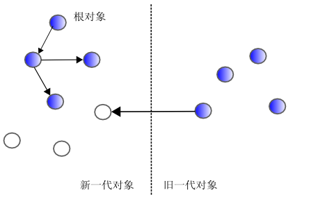
图11: 越代引用
这个很麻烦，旧一代对象引用新一代对象的瞬间，新一代对象要变成旧一代对象。 之后，这个库得到修正，在可能出现这种引用的地方加入了检查。
机制大概就是这样。这个补丁原计划在ruby 1.7中加入，结果还是没有加进来。
据说是“速度没上去”的原因。第三点的“检查所有引用”的开销是否有效，
仍在推测之中，详细原因尚不得而知。
ruby的GC能进行压缩吗？如果ruby的VALUE是直接指向结构体的指针，压缩会改变结构体的地址，
这些改变的结构体的VALUE必须全部更新。
由于ruby的GC是保守的GC，可能会有“不知道是否是真正的VALUE”的情况。
如果更新了这个值，VALUE也旧失去了意义。因此，压缩同保守GC的兼容性很差。
但是，可以想一些对策。先来考虑让VALUE不再是指针而是对象ID的方法（图12）。
这个方法在VALUE和结构体之间加入了一个间接层。这样，即便不更新VALUE，
也可以安心的移动结构体。作为补偿的代价，访问速度会变慢，扩展库的兼容性会丢失。
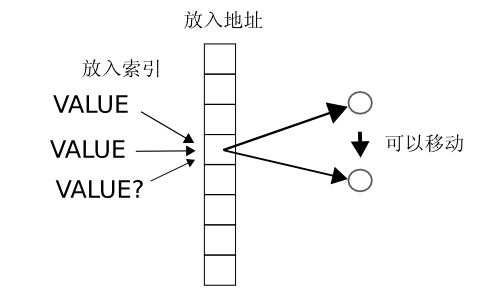
图12: 通过对象ID进行引用
还有下面这种技术，这种技术限定为只移动“确实是VALUE”的指针所指的结构体（图13）。
这种技术称为Mostly-copying garbage collection。对于普通的程序而言，
让is_pointer_to_heap()为真的对象不会太多，因此可以考虑移动对象结构体。
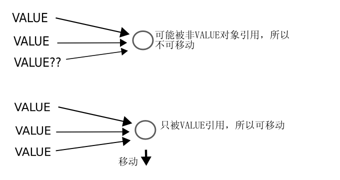
图13: Mostly-copying garbage collection
另外，如果结构体可以移动，实现按代GC就会变得简单。似乎值得一试。
volatileGC处理栈上VALUE的麻烦已经写过了。如果将VALUE放在局部变量中，则VALUE肯定会被标记。
但实际上，由于受到优化的影响，变量可能会消失。比如下面的情况就有消失的可能。
VALUE str;
str = rb_str_new2("...");
printf("%s\n", RSTRING(str)->ptr);
这段代码中，str并不访问自身，根据编译器的不同，str->ptr可能留在内存中，也可能被削去。
这样的话，str就可能在回收时被落下。这时就没有什么办法。
volatile VALUE str;
这种做法中，volatile是C的保留字，它会禁止对变量进行优化。Ruby相关的代码中加上volatile应该对付GC。阅读K&R时会想“这种东西会用在哪？”，
没想到ruby中到处可以看到它的踪迹。
看到这不难发现，保守GC的“用户无需关心GC”的溢美之词是靠不住的。
有种说法，“名为KSM的Scheme GC似乎无需volatile”，不过，这个算法有些缺陷，不适用于ruby。
gc.c内部GC何时启动？gc.c的内部有三个地方调用rb_gc()。
ruby_xmalloc()ruby_xrealloc()rb_newobj()ruby_xmalloc()和ruby_xrealloc()用在内存分配失败的情况。GC会释放内存，这样就可能会有可用的空间。rb_newobj()的情况类似，freelist为空时就会启动。
除了gc.c之外，解释器内部也有一些地方会调用rb_gc()。
首先，在io.c和dir.c中文件描述符因为不足而无法打开时会启动GC。
按计划来说，IO对象GC之后，文件会关闭，文件描述符会变为空。
ruby.c中加载文件之后，也可能会调用rb_gc()。正如清除部分所写的那样，
这是编译中的NODE无法GC的补充。
GC就说到这，因为对象要先生成再释放，所以，这里来谈谈对象的生成。 这与GC关系不大，相反，倒是和前几章所讲的类有些关系。
迄今为止，已经生成了很多次的对象。比如有这样的方法。
class C end C.new()
这个时候，C.new如何生成对象呢？
首先，C.new实际上就是Class#new。其实现如下：
rb_class_new_instance()
725 VALUE
726 rb_class_new_instance(argc, argv, klass)
727 int argc;
728 VALUE *argv;
729 VALUE klass;
730 {
731 VALUE obj;
732
733 obj = rb_obj_alloc(klass);
734 rb_obj_call_init(obj, argc, argv);
735
736 return obj;
737 }
(object.c)
rb_obj_alloc()就是调用klass的allocate方法。或者是调用这里举例的C.allocate。
缺省的Class#allocate实现就是rb_class_allocate_instance()。
rb_class_allocate_instance()
708 static VALUE
709 rb_class_allocate_instance(klass)
710 VALUE klass;
711 {
712 if (FL_TEST(klass, FL_SINGLETON)) {
713 rb_raise(rb_eTypeError,
"can't create instance of virtual class");
714 }
715 if (rb_frame_last_func() != alloc) {
716 return rb_obj_alloc(klass);
717 }
718 else {
719 NEWOBJ(obj, struct RObject);
720 OBJSETUP(obj, klass, T_OBJECT);
721 return (VALUE)obj;
722 }
723 }
(object.c)
最后三行之外的部分可以不关注。这里的NEWOBJ()和OBJSETUP()迄今为止已经出现过几次了，
这是生成Ruby对象的惯用法。这次来看看其内容。
NEWOBJ() OBJSETUP()
274 #define NEWOBJ(obj,type) type *obj = (type*)rb_newobj()
275 #define OBJSETUP(obj,c,t) do {\
276 RBASIC(obj)->flags = (t);\
277 RBASIC(obj)->klass = (c);\
278 if (rb_safe_level() >= 3) FL_SET(obj, FL_TAINT);\
279 } while (0)
(ruby.h)
rb_newobj()是这样一个函数，它从freelist取出一个RVALUE，然后返回。
NEWOBJ()不过是给rb_newobj()加上了一个假的类型参数。
而OBJSETUP()是一个初始化struct RBasic部分的宏。
这里只要想到不要忘了加上FL_TAINT标志就好了。
之后，回到rb_class_new_instance()，调用rb_obj_call_init()。
这个函数仅仅是对刚生成的对象调用initialize，完成初始化。
总结如下：
SomeClass.new = Class#new (rb_class_new_instance)
SomeClass.allocate = Class#allocate (rb_class_allocate_instance)
SomeClass#initialize = Object#initialize (rb_obj_dummy)
可以说类的allocate是物理上的初始化，而initialize是逻辑上的初始化。
这种结构……也就是将对象生成分为了allocate和initialize两部分，
由new统辖的结构，称为“分配框架”。
接下来看看扩展库中定义的类，其实例如何生成。称为用户自定义，是因为结构体还没有确定，
如果不告诉ruby分配方法，它不可能知道如何生成。来看看如何告诉它。
Data_Wrap_Struct()用户自定义也好，其它的也好，生成的结构必须遵从分配框架。也就是说，
用C定义了一个新类SomeClass，需要改写SomeClass.allocate和SomeClass#initialize。
先从allocate看起吧！这里要做的是物理上的初始化。如何分配才好呢？
用户自定义类的实例是struct RData，这是一组专为此准备的结构体。假设有个struct my类型的结构体。
Data_Wrap_Struct()这个宏可以以struct my为基础生成一个VALUE。用法如下：
struct my *ptr = malloc(sizeof(struct my)); /* 适当的从堆中取出 */ VALUE val = Data_Wrap_Struct(data_class, mark_f, free_f, ptr);
data_class是val所属的类，ptr是用于封装的指针。mark_f是标记结构体的函数（指针）。
当然，ptr本身不会标记，只有ptr所指结构体的VALUE存在时才会用到。
另一个free_f是用于释放ptr本身的函数。这两个函数的参数都是ptr。
稍微往回一点，读一下注释代码的话，一下就会明白。
再来看看Data_Wrap_Struct()的内容。
Data_Wrap_Struct()
369 #define Data_Wrap_Struct(klass, mark, free, sval) \
370 rb_data_object_alloc(klass, sval, \
(RUBY_DATA_FUNC)mark, \
(RUBY_DATA_FUNC)free)
365 typedef void (*RUBY_DATA_FUNC) _((void*));
(ruby.h)
它几乎完全转移给rb_data_object_alloc()。
rb_data_object_alloc()
310 VALUE
311 rb_data_object_alloc(klass, datap, dmark, dfree)
312 VALUE klass;
313 void *datap;
314 RUBY_DATA_FUNC dmark;
315 RUBY_DATA_FUNC dfree;
316 {
317 NEWOBJ(data, struct RData);
318 OBJSETUP(data, klass, T_DATA);
319 data->data = datap;
320 data->dfree = dfree;
321 data->dmark = dmark;
322
323 return (VALUE)data;
324 }
(gc.c)
没有什么。同通常的对象一样，只是用NEWOBJ() OBJSETUP()准备RVALUE，为成员赋值。
这里转回allocate的话题。这里生成了VALUE，然后要把它放入到适当的函数中，
在类里用rb_define_singleton_method()定义就好了。
Data_Get_Struct()接下来是initialize。从刚才方法生成的VALUE中取出struct my*的方法是必要的，
不仅限于initialize。为此会用到Data_Get_Struct()这个宏。
Data_Get_Struct()
378 #define Data_Get_Struct(obj,type,sval) do {\
379 Check_Type(obj, T_DATA); \
380 sval = (type*)DATA_PTR(obj);\
381 } while (0)
360 #define DATA_PTR(dta) (RDATA(dta)->data)
(ruby.h)
正如看到的一样，只是从RData的成员（指向(struct my）中取出指针。很简单。
Check_Type()只是检查结构体类型。
迄今为止，都是在以一副若无其事的面孔进行讲解，实际上，现在的分配框架有一个致命的问题。
目前，allocate生成的对象可以用在initialize或其它方法中，但是，
除非allocate生成的是同一个类的对象，否则传参会很麻烦。
比如，以缺省的Object.allocate（Class#allocate）生成的对象很难传给String的方法。
因为String的方法假定接收到的是struct RString结构体，而实际上是struct RObject。
为了防止出现这样的情况，C.allocate生成的对象只能传C及其子类的方法。
当然，通常是这样。因为C.allocate生成的仅是C的实例，它肯定不会传给C之外的方法。
一个例外是可以传给Object的方法，因为Object的方法并不依赖于结构体类型。
但如果不是通常情况呢？因为C.allocate是暴露在Ruby层次上的，虽然还没有解释，
但通过活用alias或super，可以把allocate的定义转移到别的类中。这样的话，
即便String类真正的结构体类型是struct RObject，也就可以生成对象了。
也就是说，ruby在Ruby层次上可以随心所欲的进行转换。这很麻烦。
问题的根源在于allocate作为方法暴露在Ruby层次上。反过来说，
allocate的内容应该以方法之外的手段定义在类中。
rb_define_allocator(rb_cMy, my_allocate);
这个想法的替代方法正在讨论之中。